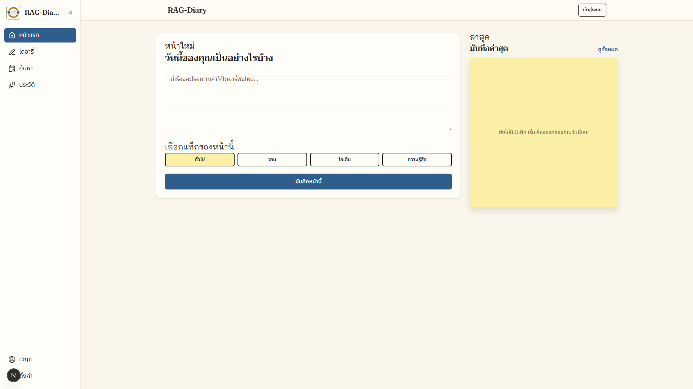
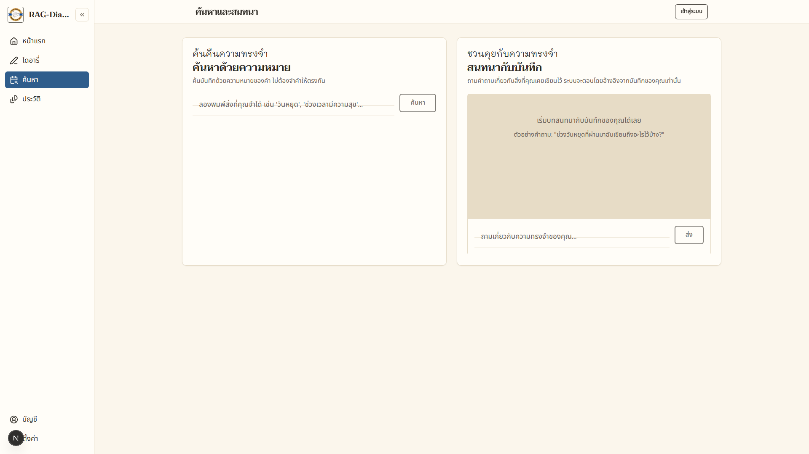

ค้นพบความต้องการ
การสัมภาษณ์จำลองกับผู้มีส่วนได้เสีย 9 กลุ่ม สรุปได้ 6 Pain Points และ 7 ช่องว่างที่เชื่อมโยงกับความต้องการ
D-02 · D-03 · D-04
Portfolio · Business Analyst / System Analyst
นักวิเคราะห์ธุรกิจและนักวิเคราะห์ระบบที่ลงมือพัฒนาระบบจริง ตั้งแต่การรวบรวมความต้องการ การนิยามเกณฑ์ยอมรับ ไปจนถึงการออกแบบสถาปัตยกรรม ข้อมูล และเส้นทางความเป็นส่วนตัว
เกี่ยวกับ
สำเร็จการศึกษาระดับปริญญาโทสาขาเทคโนโลยีชีวภาพ มหาวิทยาลัยขอนแก่น และเข้าสู่สายการพัฒนา ซอฟต์แวร์ผ่านหลักสูตร Junior Software Developer ของ Generation Thailand
ปฏิบัติงานในบทบาทนักวิเคราะห์ธุรกิจและนักวิเคราะห์ระบบควบคู่กับการพัฒนา ครอบคลุมการรวบรวม ความต้องการ การสร้างแบบจำลองสถาปัตยกรรมและข้อมูล การวางแผนทดสอบ และการจัดทำเอกสาร ที่สามารถตรวจสอบย้อนกลับได้ในทุกข้อกำหนด
ความสนใจปัจจุบันอยู่ที่การวิเคราะห์และออกแบบระบบที่ประยุกต์ใช้ AI โดยกำหนดความเป็นส่วนตัว ของผู้ใช้เป็นเงื่อนไขตั้งต้นของการออกแบบ
Featured project
โครงการส่วนบุคคลที่ลงมือสร้างเองแบบครบวงจร ทั้งบทบาทนักวิเคราะห์ธุรกิจ นักวิเคราะห์ระบบ และผู้พัฒนาระบบ เพื่อพิสูจน์ว่าวิธีคิดแบบ BA/SA ใช้ได้จริงกับระบบที่รันได้
คลิปแนะนำโครงการ 30 วินาที (มีเสียงบรรยากาศเบา ๆ)
ปัญหา
สิ่งที่ทำ
ผลลัพธ์
การสัมภาษณ์จำลองกับผู้มีส่วนได้เสีย 9 กลุ่ม สรุปได้ 6 Pain Points และ 7 ช่องว่างที่เชื่อมโยงกับความต้องการ
D-02 · D-03 · D-04
ข้อกำหนดความต้องการ 15 ข้อพร้อมเกณฑ์ Given/When/Then, user stories 10 เรื่อง, use case 6 กรณี และกฎธุรกิจ 10 ข้อ
D-05 · D-06 · D-07 · D-08
Swimlane, C4 สามระดับ, ERD พร้อม RLS, DFD สองระดับ และลำดับข้อความ 6 เส้น
D-10 · D-11 · D-12 · D-13 · D-14
สัญญา API 15 ปลายทาง, wireframe 7 หน้าจอ และบันทึกการตัดสินใจ 10 ฉบับ
D-15 · D-16 · D-17
ข้อกำหนดคุณภาพ 8 ข้อแบบวัดได้, ทะเบียนความเสี่ยง 11 รายการ และแผนทดสอบ 23 กรณี
D-18 · D-19 · D-20 · D-21
แผนสามรุ่น, บันทึกคำขอเปลี่ยนแปลง 9 รายการ และอภิธานศัพท์กลาง
D-22 · D-23 · D-24


ครึ่งที่สอง · ออกแบบระบบ
อีกครึ่งของงานคือการตอบว่า ระบบประกอบด้วยอะไร ข้อมูลปลอดภัยอย่างไร และแต่ละทางเลือกถูกเลือกเพราะอะไร ทั้งหมดอยู่ในเอกสาร D-10 ถึง D-20
RLS สี่นโยบายผูกกับ auth.uid() ทำให้แม้โค้ดแอปพลาด ข้อมูลของผู้อื่นก็ไม่ถูกส่งคืน
เวกเตอร์ 1,536 มิติ บน pgvector พร้อมดัชนี HNSW และน้ำหนักคำสำคัญในฟังก์ชันเดียว
ทุกเส้นทางที่ส่งข้อความออกไปยังผู้ให้บริการ AI มีจุดตรวจความยินยอมก่อนเสมอ
10 บันทึกการตัดสินใจ ระบุทางเลือกที่พิจารณาและเหตุผลที่ไม่ได้เลือก
เอกสารทั้ง 11 ฉบับของครึ่งนี้อยู่ในรายการด้านล่าง (D-10 ถึง D-20) และดาวน์โหลดได้ในชุด ZIP เดียวกัน
ประสบการณ์และประวัติ
กรุงเทพมหานคร
Fastwork (ทางไกล)
มหาวิทยาลัยขอนแก่น
วิทยานิพนธ์: Biochemical methane potential of sugarcane leaves and specific methanogenic activity of mixed cultures
มหาวิทยาลัยขอนแก่น
Generation Thailand
หลักสูตร full-stack: Node.js, React, MongoDB; การทำงานแบบ agile, การออกแบบ API และ Git
วิธีทำงาน
ทุกฉบับเริ่มจากการกำหนดขอบเขตและเกณฑ์ความสำเร็จร่วมกันก่อนลงมือจัดทำ
ปัญหา ความต้องการ กรณีใช้งาน หน้าจอ API และกรณีทดสอบ ได้รับการเชื่อมโยงไว้ในตารางเดียว
ข้อกำหนดคุณภาพเขียนเป็นตัวเลข เช่น p95 ไม่เกิน 3.5 วินาที ที่ข้อมูล 5,000 รายการ
จุดอ่อนและสิ่งที่ยังไม่ได้ดำเนินการได้รับการบันทึกพร้อมแผนแก้ไขในรุ่นถัดไป มิได้ละเว้นหรือกล่าวเกินจริง
เอกสารทั้งหมด
ไฟล์ PDF ทั้ง 25 ฉบับ ครอบคลุมทั้งงานวิเคราะห์ธุรกิจและงานออกแบบระบบ พร้อมชุด ZIP สำหรับดาวน์โหลดครั้งเดียว
ติดต่อ
Oranut Suphatamat (Dao) · Business Analyst / System Analyst